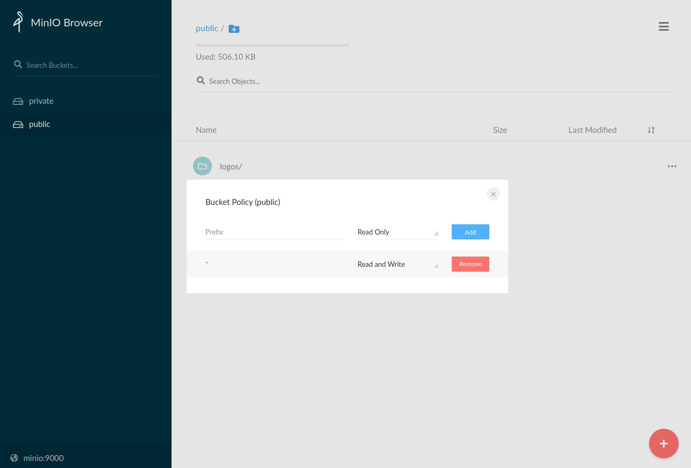
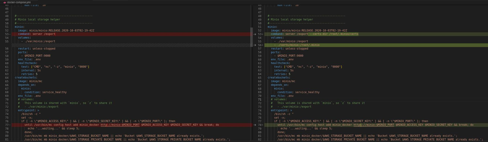

How to deploy Codabench on your server
Overview
This document focuses on how to deploy the current project to the local machine or server you are on.
Preliminary steps
As for the minimal local installation, you first need to:
-
Install docker and docker-compose (see instructions)
-
Clone Codabench repository:
Modify .env file configuration
Then you need to modify the .env file with the relevant settings. This step is critical to have a working and secure deployment.
- Go to the folder where codabench is located (
cd codabench)
Then edit the variables inside the .env and the my-postgres.conf files. You can keep the default values of my-postgres.conf if you don't want to change anything
Submissions endpoint
For an online deployment, you'll need to fill in the IP address or domain name in some environment variables.
Using an IP address
b) For an online deployment using IP address:
Note
To get the IP address of the machine. You can use one of the following commands:
ifconfig -aip addrip ahostname -I | awk '{print $1}'nmcli -p device show
Replace the value of IP address in the following environment variables according to your infrastructure configuration:
SUBMISSIONS_API_URL=https://<IP ADDRESS>/api
DOMAIN_NAME=<IP ADDRESS>:80
AWS_S3_ENDPOINT_URL=http://<IP ADDRESS>/
Using a domain name (DNS)
SUBMISSIONS_API_URL=https://yourdomain.com/api
DOMAIN_NAME=yourdomain.com
AWS_S3_ENDPOINT_URL=https://yourdomain.com
If you are deploying on an azure machine, then AWS_S3_ENDPOINT_URL needs to be set to an IP address that is accessible on the external network
Change default usernames and passwords
Set up new usernames and passwords:
DB_USERNAME=postgres
DB_PASSWORD=postgres
[...]
RABBITMQ_DEFAULT_USER=rabbit-username
RABBITMQ_DEFAULT_PASS=rabbit-password-you-should-change
[...]
FLOWER_BASIC_AUTH=root:password-you-should-change
[...]
#EMAIL_HOST_USER=user
#EMAIL_HOST_PASSWORD=pass
[...]
MINIO_ACCESS_KEY=testkey
MINIO_SECRET_KEY=testsecret
# or
AWS_ACCESS_KEY_ID=testkey
AWS_SECRET_ACCESS_KEY=testsecret
It is very important to set up an SSL certificate for Public deployement
Open Access Permissions for following port number
If you are deploying on a Linux server, which usually has a firewall, you need to open access permissions to the following port numbers
5672: rabbit mq port8000: django port9000: minio port
Modify django-related configuration
- Go to the folder where codabench is located
- Go to the settings directory and modify
base.pyfilecd src/settings/nano base.py
- Change the value of
DEBUGtoTrueDEBUG = os.environ.get("DEBUG", True)
If DEBUG is not set to true, then you will not be able to load to the static resource file
- Comment out the following code
Python
# ============================================================================= # Debug # ============================================================================= #if DEBUG: # INSTALLED_APPS += ('debug_toolbar',) # MIDDLEWARE = ('debug_toolbar.middleware.DebugToolbarMiddleware', # 'querycount.middleware.QueryCountMiddleware', # ) + MIDDLEWARE # we want Debug Middleware at the top # # tricks to have debug toolbar when developing with docker # # INTERNAL_IPS = ['127.0.0.1'] # # import socket # # try: # INTERNAL_IPS.append(socket.gethostbyname(socket.gethostname())[:-1]) # except socket.gaierror: # pass # # QUERYCOUNT = { # 'IGNORE_REQUEST_PATTERNS': [ # r'^/admin/', # r'^/static/', # ] # } # # DEBUG_TOOLBAR_CONFIG = { # "SHOW_TOOLBAR_CALLBACK": lambda request: True # }
Start service
- Execute command
docker compose up -d - Check if the service is started properly
docker compose ps
codabench_compute_worker_1 "bash -c 'watchmedo …" running
codabench_caddy_1 "/bin/parent caddy -…" running 0.0.0.0:80->80/tcp, :::80->80/tcp, 0.0.0.0:443->443/tcp, :::443->443/tcp, 2015/tcp
codabench_site_worker_1 "bash -c 'watchmedo …" running
codabench_django_1 "bash -c 'cd /app/sr…" running 0.0.0.0:8000->8000/tcp, :::8000->8000/tcp
codabench_flower_1 "flower" restarting
codabench_rabbit_1 "docker-entrypoint.s…" running 4369/tcp, 5671/tcp, 0.0.0.0:5672->5672/tcp, :::5672->5672/tcp, 15671/tcp, 25672/tcp, 0.0.0.0:15672->15672/tcp, :::15672->15672/tcp
codabench_minio_1 "/usr/bin/docker-ent…" running 0.0.0.0:9000->9000/tcp, :::9000->9000/tcp
codabench_db_1 "docker-entrypoint.s…" running 0.0.0.0:5432->5432/tcp, :::5432->5432/tcp
codabench_builder_1 "docker-entrypoint.s…" running
codabench_redis_1 "docker-entrypoint.s…" running 0.0.0.0:6379->6379/tcp, :::6379->6379/tcp
- Create the required tables in the database:
docker compose exec django ./manage.py migrate - Generate the required static resource files:
docker compose exec django ./manage.py collectstatic --noinput
Tip
You can generate mock data with docker compose exec django ./manage.py generate_data if you want to test the website. However, it is not recomended to do that on an installation that you intend to use for Production
Set public bucket policy to read/write
This can easily be done via the minio web console (local URL: minio:9000)

{kind=link}
Checkout the log of the specified container
The following commands can help you debug
docker compose logs -f django: checkout django container logs in the docker-compose servicedocker compose logs -f site_worker: checkout site-worker container logs in the docker-compose servicedocker compose logs -f compute_worker: checkout compute-worker container logs in the docker-compose servicedocker compose logs -f minio: checkout minio container logs in the docker-compose service
You can also use docker compose logs -f to get the logs of all the containers.
Stop service
- Execute command
docker compose down --volumes
Disabling docker containers on production
To override settings on your production server, create a docker-compose.override.yml in the codabench root directory.
If on your production server, you are using remote MinIO or another cloud storage provider then you don't need minio container.
If you have already buckets available for your s3 storage, you don't need createbuckets container.
Therefore, you should disable minio and createbuckets containers. You may also want to disable the compute worker that is contained in the main server compute, to keep only remote compute workers.
Add this to your docker-compose.override.yml:
version: '3.4'
services:
compute_worker:
command: "/bin/true"
minio:
restart: "no"
command: "/bin/true"
createbuckets:
entrypoint: "/bin/true"
restart: "no"
depends_on:
minio:
condition: service_started
Warning
This will force the following container from exiting on start:
- Compute Worker
- MinIO
- CreateBuckets
If you need one of these then remove the corresponding lines from the file before launching
Link compute workers to default queue
The default queue of the platform runs all jobs, except when a custom queue is specified by the competition or benchmark. By default, the compute worker of the default queue is a docker container run by the main VM. If your server is used by many users and receives several submissions per day, it is recommended to use separate compute workers and to link them to the default queue.
To set up a compute worker, follow this guide
In the .env file of the compute worker, the BROKER_URL should reflect settings of the .env file of the platform:
BROKER_URL=pyamqp://<RABBITMQ_DEFAULT_USER>:<RABBITMQ_DEFAULT_PASS>@<DOMAIN_NAME>:<RABBITMQ_PORT>/
HOST_DIRECTORY=/codabench
BROKER_USE_SSL=True
Personalize Main Banner
The main banner on the Codabench home page shows 3 organization logos
{kind=link}
You can update these by:
- Replacing the logos in
src/static/img/folder - Updating the code in
src/templates/pages/home.htmlto point to the right websites of your organizations
Frequently asked questions (FAQs)
Invalid HTTP method
Exception detail (by using docker logs -f codabench_django_1)
Traceback (most recent call last):
File "/usr/local/lib/python3.8/site-packages/uvicorn/protocols/http/httptools_impl.py", line 165, in data_received
self.parser.feed_data(data)
File "httptools/parser/parser.pyx", line 193, in httptools.parser.parser.HttpParser.feed_data
httptools.parser.errors.HttpParserInvalidMethodError: invalid HTTP method
[2021-02-09 06:58:58 +0000] [14] [WARNING] Invalid HTTP request received.
Traceback (most recent call last):
File "/usr/local/lib/python3.8/site-packages/uvicorn/protocols/http/httptools_impl.py", line 165, in data_received
self.parser.feed_data(data)
File "httptools/parser/parser.pyx", line 193, in httptools.parser.parser.HttpParser.feed_data
httptools.parser.errors.HttpParserInvalidMethodError: invalid HTTP method
{kind=link}
Solution
-
First, modify the
.envfile and setDJANGO_SETTINGS_MODULE=settings.develop -
Then, restart services by using following docker-compose command
Missing static resources (css/js)
Solution: Change the value of the DEBUG parameter to True
nano competitions-v2/src/settings/base.pyDEBUG = os.environ.get("DEBUG", True)
{kind=link}
- Also comment out the following code in
base.py
{kind=link}
CORS Error (could not upload bundle)
Exception detail (by checkout google develop tools)
botocore.exceptions.EndpointConnectionError: Could not connect to the endpoint URL: "[http://docker.for.mac.localhost:9000/private/dataset/2021-02-18-1613624215/24533cfc523e/competition.zip](http://docker.for.mac.localhost:9000/private/dataset/2021-02-18-1613624215/24533cfc523e/competition.zip)"
Solution: Set AWS_S3_ENDPOINT_URL to an address that is accessible to the external network
nano codabench/.env
{kind=link}
Make sure the IP address and port number is accessible by external network, You can check this by :
telnet {ip-address-filling-in AWS_S3_ENDPOINT_URL} {port-filling-in AWS_S3_ENDPOINT_URL}- Make sure the firewall is closed on port 9000
This problem may also be caused by a bug in MinIO, in which case you will need to follow these steps
- Upgrade the minio docker image to the latest version
- Delete the previous minio directory folder in your codabench folder under
/var/miniodirectory - Stop the current minio container
- Delete the current minio container and the corresponding image
- Re-execute
docker compose up -d
Display logos error: logos don't upload from minio:
Check bucket policy of public minio bucket: read/write access should be allowed.
This can easily be done via the minio web console (local URL: minio:9000)
Compute worker execution with insufficient privileges
This issue may be encountered when starting a docker container in a compute worker, the problem is caused by the installation of snap docker (if you are using Ubuntu).
Solution
- Uninstall snap docker
- Install the official version of docker
Securing Codabench and Minio
Codabench uses Caddy to manage HTTPS and to secure Codabench. What you need is a valid DNS pointed towards the IP address of your instance.
Secure Minio with a reverse proxy
To secure MinIO, you should install a reverse-proxy, e.g: Nginx, and have a valid SSL certificate. Here is a tutorial sample:
Secure MinIO with Certbot and Letsencrypt
Don't forget to update your AWS_S3_ENDPOINT_URL parameter
Update it to AWS_S3_ENDPOINT_URL=https://<your minio>
Secure Minio on the same server as codabench (simpler)
Summary:
- Use same SSL certs from letsencrypt (certbot) but change fullchain.pem -> public.crt and privkey.pem -> private.key. I copied from ./certs/caddy (for django/caddy) to ./certs/minio/certs.
- You need to change the command for minio to "server /export --certs-dir /root/.minio/certs" and not just "server /export"
- Mount in certs:
- Add "- ./certs/minio:/root/.minio" under the minio service's "volumes" section
- Certs must be in /${HOME}/.minio and for dockers ends up being /root/.minio
- Edit the .env with minio cert location:
Bash
MINIO_CERT_FILE=/root/.minio/certs/public.crt MINIO_KEY_FILE=/root/.minio/certs/private.key # MINIO_CERTS_DIR=/certs/caddy # was told .pem files could work but for now separating MINIO_CERTS_DIR=/root/.minio/certs # either this or the CERT\KEY above is redundant...but it works for now. # NOTE! if you change this port, change it in AWS_S3_ENDPOINT_URL as well MINIO_PORT=9000 - Here is an example docker-compose.yml change for this:
Bash
#----------------------------------------------- # Minio local storage helper #----------------------------------------------- minio: image: minio/minio:RELEASE.2020-10-03T02-19-42Z command: server /export --certs-dir /root/.minio/certs volumes: - ./var/minio:/export - ./certs/minio:/root/.minio restart: unless-stopped ports: - $MINIO_PORT:9000 env_file: .env healthcheck: test: ["CMD", "nc", "-z", "minio", "9000"] interval: 5s retries: 5 createbuckets: image: minio/mc depends_on: minio: condition: service_healthy env_file: .env # volumes: # This volume is shared with `minio`, so `z` to share it # - ./var/minio:/export entrypoint: > /bin/sh -c " set -x; if [ -n \"$MINIO_ACCESS_KEY\" ] && [ -n \"$MINIO_SECRET_KEY\" ] && [ -n \"$MINIO_PORT\" ]; then until /usr/bin/mc config host add minio_docker https://minio:$MINIO_PORT $MINIO_ACCESS_KEY $MINIO_SECRET_KEY && break; do echo '...waiting...' && sleep 5; done; /usr/bin/mc mb minio_docker/$AWS_STORAGE_BUCKET_NAME || echo 'Bucket $AWS_STORAGE_BUCKET_NAME already exists.'; /usr/bin/mc mb minio_docker/$AWS_STORAGE_PRIVATE_BUCKET_NAME || echo 'Bucket $AWS_STORAGE_PRIVATE_BUCKET_NAME already exists.'; /usr/bin/mc anonymous set download minio_docker/$AWS_STORAGE_BUCKET_NAME; else echo 'MINIO_ACCESS_KEY, MINIO_SECRET_KEY, or MINIO_PORT are not defined. Skipping buckets creation.'; fi; exit 0; "
{kind=link}
Note
Don't forget to change the entrypoint to run https and not http.
Workaround: MinIO and Django on the same machine with only the port 443 opened to the external network.
The S3 API signature calculation algorithm does not support proxy schemes where you host the MinIO Server API such as example.net/s3/.
However, we can set the same URL for minio and django site and configure a proxy for each bucket in the Caddyfile :
Caddyfile :
@dynamic {
not path /static/* /media/* /{$AWS_STORAGE_BUCKET_NAME}* /{$AWS_STORAGE_PRIVATE_BUCKET_NAME}* /minio*
}
reverse_proxy @dynamic django:8000
@min_bucket {
path /{$AWS_STORAGE_BUCKET_NAME}* /{$AWS_STORAGE_PRIVATE_BUCKET_NAME}*
}
reverse_proxy @min_bucket minio:{$MINIO_PORT}
Codabench Instance behind a reverse proxy
If you put your instance behind a reverse proxy and want that proxy to contact the instance via http or https, your DOMAIN_NAME might not be reachable from the outside. In this case, you can set DOMAIN_NAME as your internal domain name, used by the reverse proxy, and EXTERNAL_DOMAIN_NAME as the domain name that is known on external networks (like the internet).